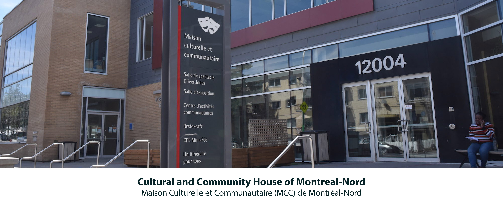
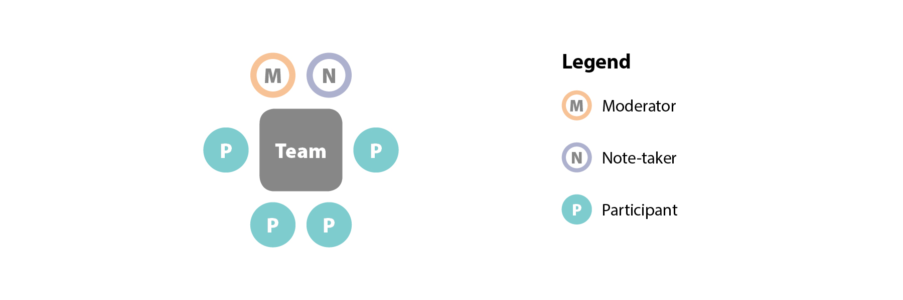
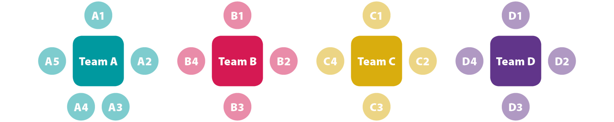
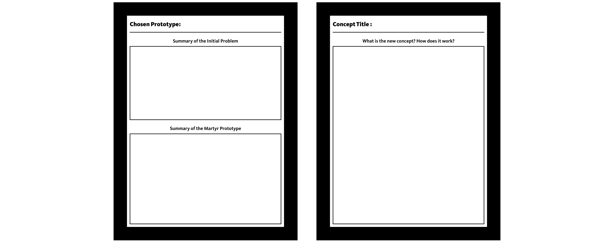
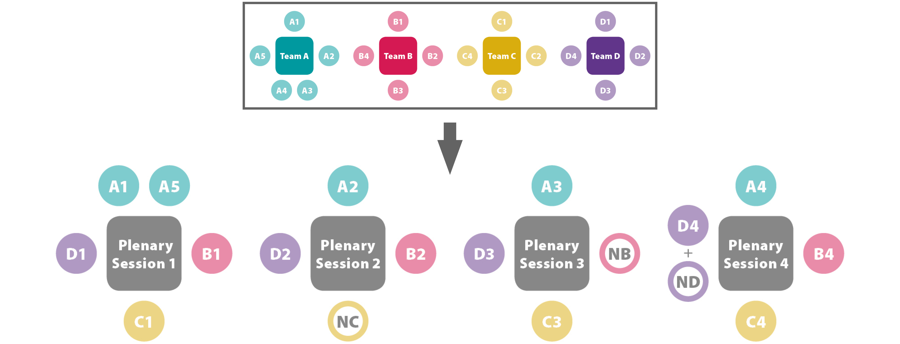

Advocating for a more Democratic Process
A critical analysis of codesign plenary sessions within public project development.

Summary
Codesign activities are increasingly used in the development of public services and policies. These approaches involve citizens in the design process, thus giving it a democratic value. However, few measures are currently in place to ensure that the epistemic value provided by participants is reflected in the final design. The objective of this project is to determine the type of ideas that can be lost during the synthesis moments of codesign activities, and then to indicate possible solutions to make the process more democratic.
My Role
Background research, literature review, field research (observations and interviews), solution prototyping, codesign activities, qualitative and quantitative analyses, master’s thesis writing
Tools
NVivo, QDA Miner, Photoshop, Illustrator, Indesign, Codesign maketools, Microsoft Excel
Context
In the public sector context, the use of participatory design methods such as codesign approaches have gained momentum since the beginning of the 21st century. Many decision‑makers see codesign as an opportunity to make the development of public services and policies more democratic, as this approach involves citizens in the design process. Codesign activities enable ordinary citizens to communicate their complex realities, thereby allowing the development of solutions that are better adapted to their needs. However, the epistemic value provided by participants still needs to be effectively communicated to the designers and project sponsors to ensure a democratic codesign process.
Codesign activities remain a complex exercise that poses a number of challenges. The type of codesign event analyzed in this research generally has three phases: the preparation of the activity, the activity itself and the conclusion phase where a report is normally delivered to the sponsor of the project. The codesign activity can be divided into two moments. A first moment of divergence where the participants generate new concepts using codesign tools (maketools) that are presented to them. Then, a moment of convergence where participants must synthesize their solution to finally present their concept.
The problem is that these moments are difficult to frame, because they imply a synthesis work. But any synthesis requires leaving some things out. In other words, synthesis efforts produce residual data. The question is, what is the value of this data? Moreover, is it possible to limit this loss of data?

Research
Literature Review
As this project was conducted within the framework of my Master's thesis, a literature review was meticulously carried out. It was partially done prior to the field research and was then completed during the analysis and writing of the thesis. The literature review touched on many topics related to participatory design, codesign approaches in the public sector, the importance of democratic participation, and the value of codesign approaches.
Field research
 The field research for this project was conducted during a month-long residency at the public library of the MCC of Montreal North during the spring of 2019. This residency consisted of four phases:
- Ethnography and unstructured interviews to understand the problems that citizens can face athe the library of the MCC
- Development of 34 personas to understands who are the people using the library
- Development and test of preliminary prototypes that were developed to solve those problems
- Codesign activity to test the prototypes and create new solutions
Codesign activity
[explanation codesign]

[explanation codesign]
[explanation codesign]
[explanation codesign]

[explanation codesign]
[explanation codesign]
[explanation codesign]
Analysis
Results